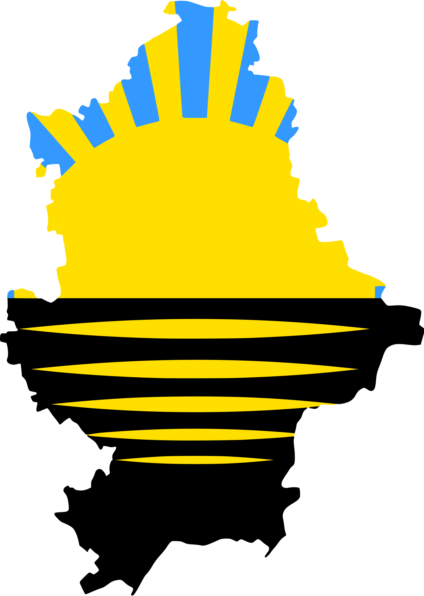

Donetsk
Donetsk, formerly (until 1924) Yuzivka or Yuzovka, also spelled Iuzovka, (1924–61) Stalino, city, southeastern Ukraine, on the headwaters of the Kalmius River. It is the capital of Donetsk oblast (province) and the most prominent city in the Donets Basin (Donbas) industrial region.